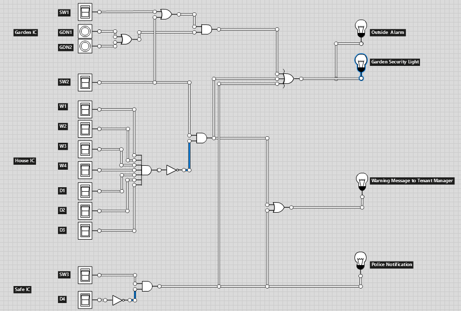
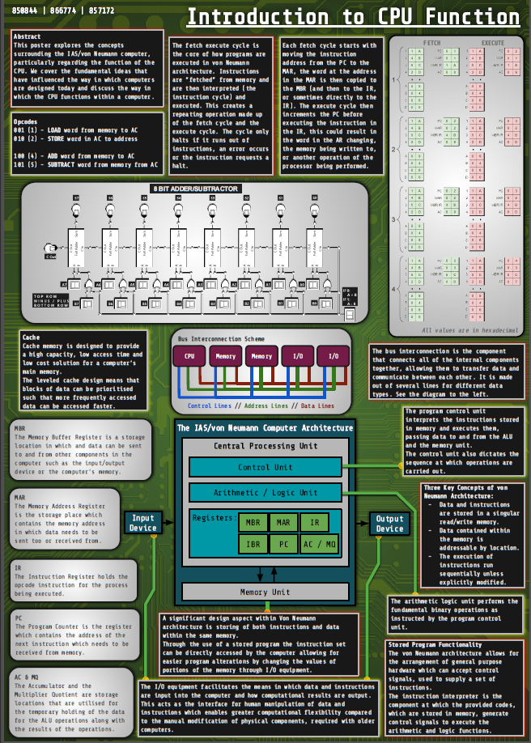

Computer Architecture
In the Computer Architecture unit of my course I exlpored topics such as boolean algebra, logic circuits, CPU design and the role of operating systems.
Intrusion Circuit Design - CW1
For our first CAR coursework, we were tasked with designing an intrusion logic circuit that needed to consider certain switches representing doors and windows that would output the appropriate alarm for specific situations.
The circuit was designed in Logicly.
Intrusion Circuit Optimisation - CW2
In our second CAR coursework, we aimed to optimise and prove the optimisation of out Intrusion Circuit developed during the previous coursework. Through using boolean algebra and Karnaugh maps, we we're able to demonstrate that the circuit we developed in CW1 was optimised.
We were also tasked with simplifiying and converting our Intrusion Circuit into a circuit entirely comprised of a universal gate of our choice. We chose to convert our circuit into a NAND only circuit.
Optimisation demostration .pdf.
CPU Poster - CW3
In out third coursework we were tasked with creating a poster which discussed the functional elements surrounding a CPU as well as covering topics such as von Neumann architecture and the fetch execute cycle.
OS Presentation - CW4
In our final coursework piece we prepared a presentation to discuss a hypothetical operating system for a hypothetical Augmented Reality glasses device.